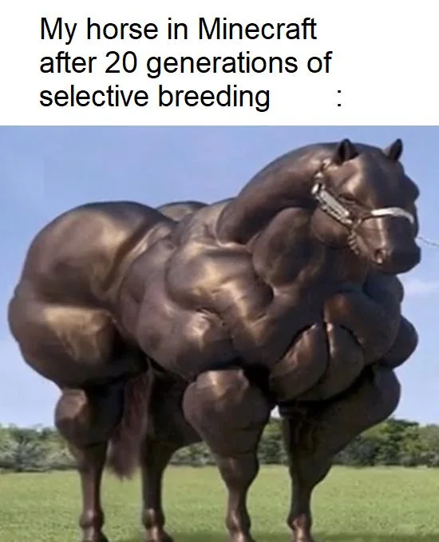
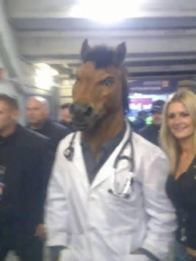
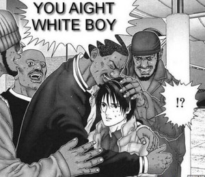
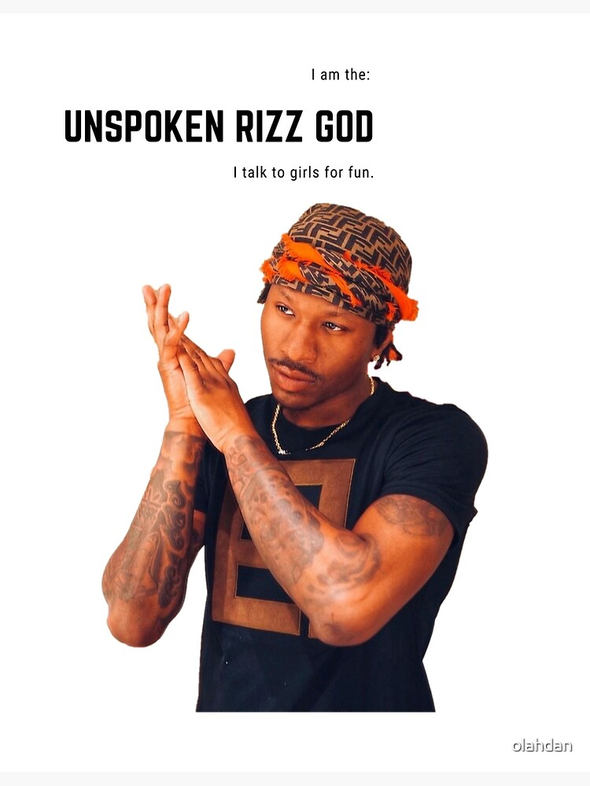

part 2
characters
- john grady cole - a sixteen year old boy who is the last in a line of ranchers. has a natural ability with horses.
- lacey rawlins - john grady's best friend.
- don héctor rocha y villareal - the owner of the hacienda that john and lacey end up at.
- alejandra - don héctor's daughter.
- dueña alfonsa - alejandra's great-aunt.
- armando and antonio - the ranch manager and his brother, respectively.
plot
- john grady and lacey now work at don héctor's hacienda
- the boys start with cattle, then aura farm by successfully taming a large group of colts
- don héctor promotes john to chief horse scientist and moves him into the stable, putting him closer to alejandra
- john grady rizzes up alejandra
- cops pull up to the hacienda for some reason?
- alfonsa warns john grady of his rizzling ways to protect alejandra's reputation from a white boy with a little bit of swag
- john grady and alfonsa proceed to get busy despite the warnings
- the cops come back and arrest john grady and lacey, taking them away from the hacienda




themes
- fleeting paradise!
- honor and reputation!
- romance!
- horses
discussion questions
- why does john grady take up the challenge of taming the colts, even when lacey is doubtful?
- what does don héctor mean when he warns john grady against putting too much faith in reason?
- alfonsa says alejandra's reputation is at stake. is she protecting alejandra, the family, or something larger? is she a villain, a realist, or something else?
- would you have risked it all for alejandra? would you have let her call the shots (e.g., demanding to ride the stallion)?
- is john Grady a romantic hero, a naive boy, or both? did your view of him change over the course of part 2?